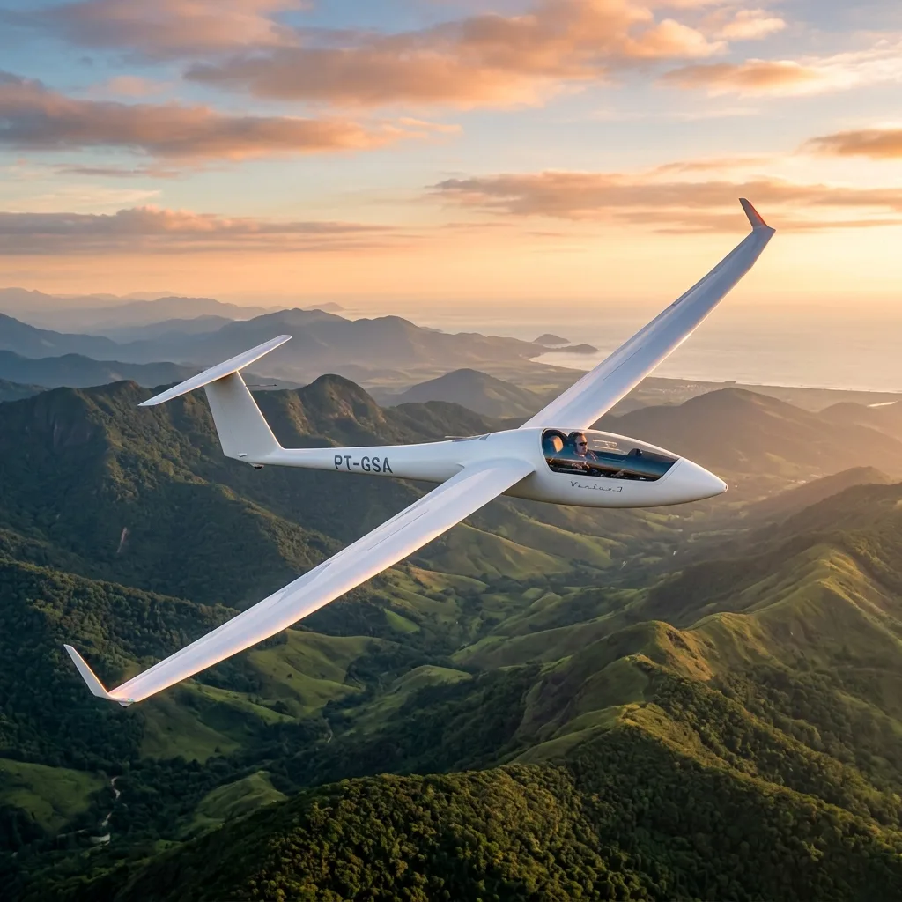
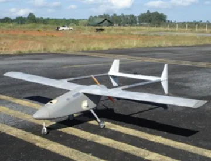
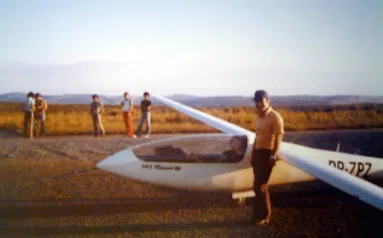

Research & Capabilities
CEA’s engineering experience brings together aircraft design, prototype construction, experimental aerodynamics, instrumentation and flight testing. These activities support research and education through documented projects and experimental infrastructure.
Core Capabilities
Four documented pillars connecting analytical design to physical prototyping, laboratory measurement and flight validation.

Aircraft Design & Construction
From engineering drawings to prototype structures, CEA’s documented projects connect design decisions with materials, manufacturing, bonded joints, and precision composite assembly.

Experimental Aerodynamics
Wind-tunnel experiments and sensor calibration connect aerodynamic analysis with measurements. CEA-WT1 forms part of this documented history of student participation and experimental work.

Flight Testing & Instrumentation
Aircraft instrumentation, data acquisition and telemetry connect ground preparation with measurements in flight across CEA's world-record setting flight test campaigns.

Computational Engineering
Engineering models support aerodynamic and structural decisions, integrating structural sizing (FEA), computational fluid dynamics (CFD) and mission trajectory analysis.

Flight test team preparing the CB-2 Minuano (PP-ZPZ) on the flight line for aerodynamic and envelope evaluations.
Flight-Test Infrastructure
The inauguration of the Conselheiro Lafaiete Airport hangar in 1974 gave CEA dedicated facilities for flight testing, maintenance and operations. Combined with the Flight Testing and Operations Laboratory, it connects ground preparation with airborne data acquisition.
Conselheiro Lafaiete Airfield Hangar
Dedicated runway access, hangarage, and mechanical workshop for airframe assembly, pre-flight checks, and operational maintenance.
Flight Testing & Operations Laboratory
Specialized instrumentation development, sensor calibration arrays, pitot-static systems, and real-time telemetry decoding.
Envelope Expansion & Telemetry
Validating stability derivatives, flutter margins, climb rates, and high-speed envelope data against theoretical aeroelastic models.
Project-Based Collaboration
Research collaborations are defined around technical objectives, institutional arrangements and the resources required for each project.
Discuss a Research Collaboration